×
Otros modelados 3D
Colección de modelados 3D realizados en proyectos académicos, utilizando 3Ds Max, Blender y Nomad Sculpt.
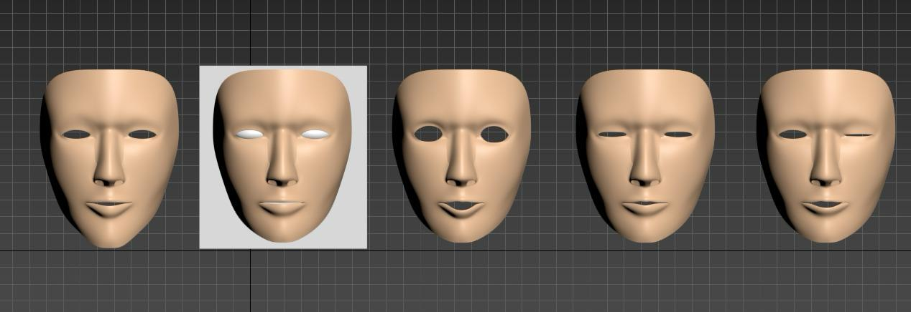
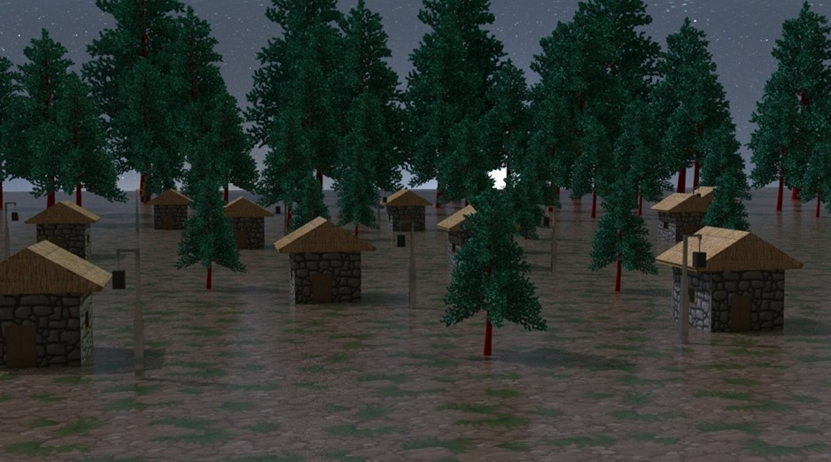
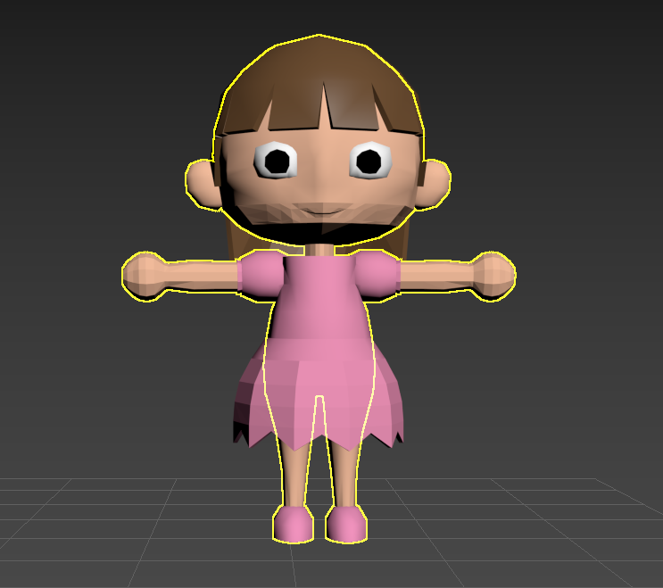
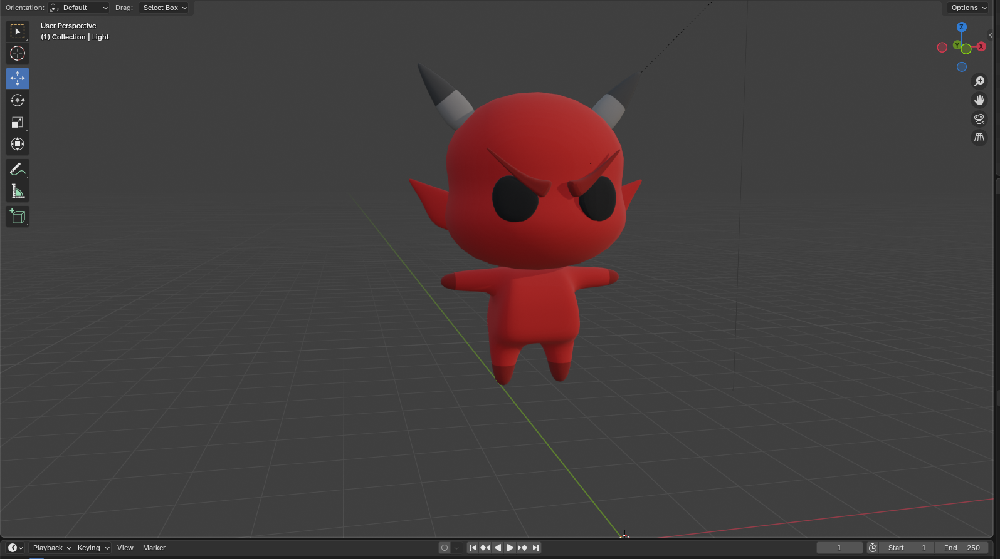
 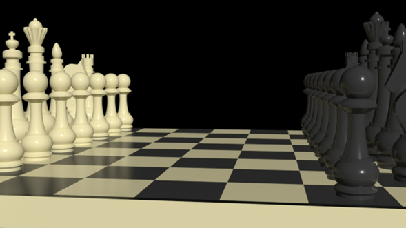
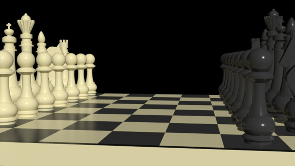
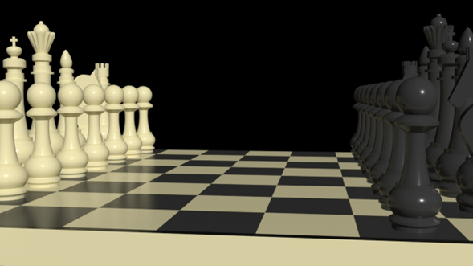
Soy estudiante de Ingeniería en Creación de Videojuegos y Entornos Virtuales en la Universidad Autónoma de Guadalajara, con interés principal en el área de arte y diseño, aunque también cuento con conocimientos de programación. Me gusta crear experiencias interactivas que combinen estética, narrativa y jugabilidad.
Juego en Unity con animaciones, selección de dificultad y sistema de Game Over.
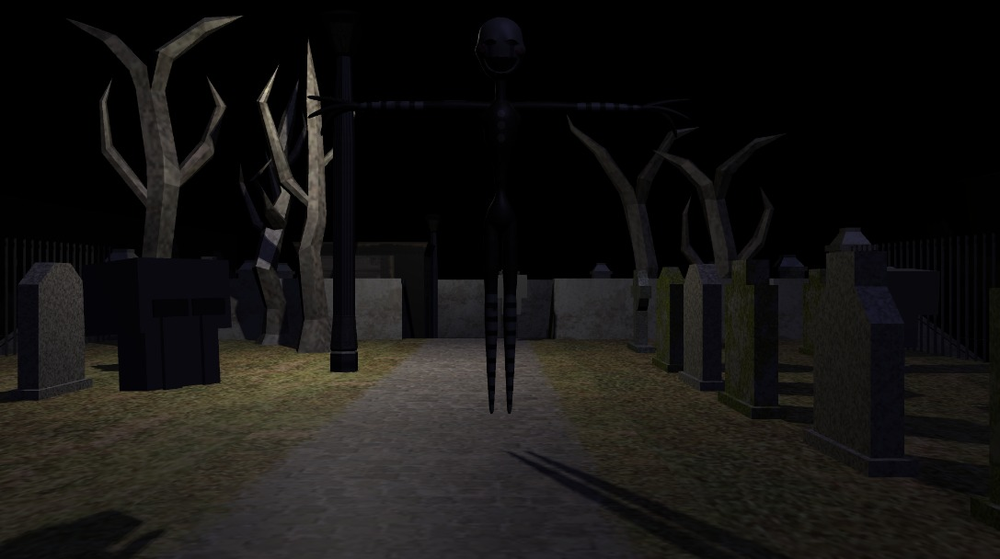Modelado 3D con huesos para un laboratorio de biomédica.
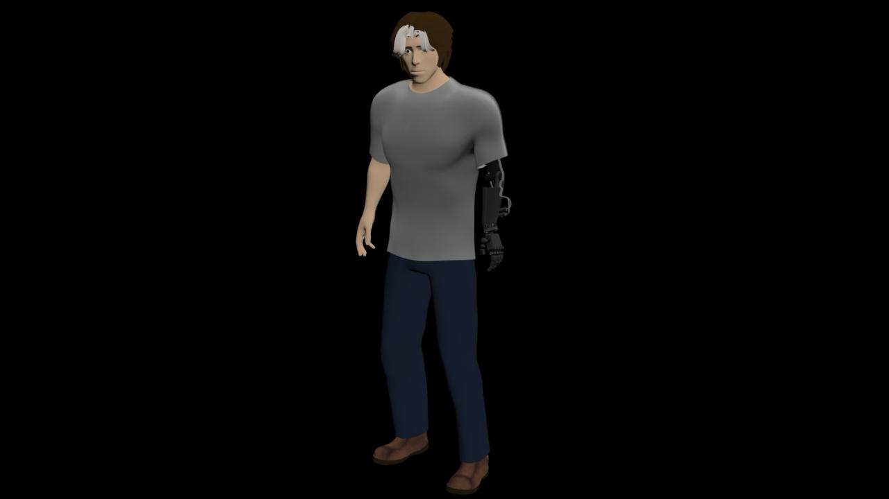Idea de videojuego para un cliente con entornos modelados, modelos de personajes y cotizaciones.
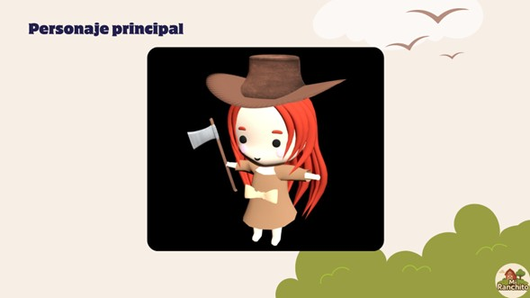Videojuego con diseños originales 2D, animaciones, doblaje y nivel completo.
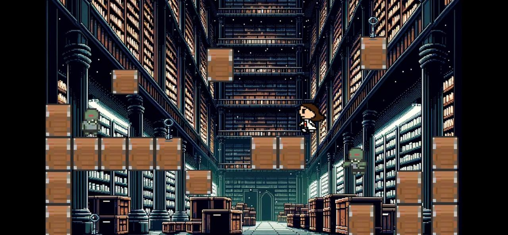Animación corta en After Effects con fondo en 3D hecho en 3Ds Max.
Modelados 3D realizados en 3Ds Max, Blender y Nomad Sculpt.
Click para ver.
Colección de modelados 3D realizados en proyectos académicos, utilizando 3Ds Max, Blender y Nomad Sculpt.
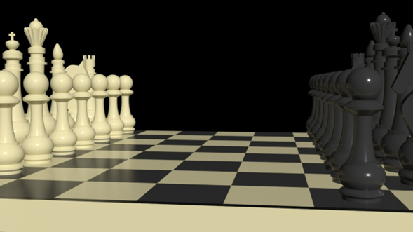